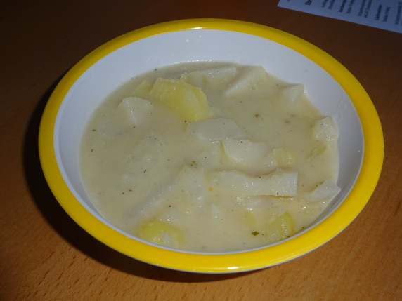

Kohlrabi-Eintopf

- Zubereitung: ca. 15 Minuten
- Kochen: ca. 20 Minuten
Zutaten
- 6 bis 7 Kohlrabi (ca. 1,5 kg)
- 500 g Kartoffeln, vorwiegend festkochend
- 4 Mettendchen
- 1 EL Weizenmehl
- 1/8 l Sahne
Zubereitung
- Die Kohlrabi und Kartoffeln schälen, waschen und in Streifen schneiden.
- Die vier Mettendchen in 3/4 l Wasser ca. 5 Minuten kochen. Die Kartoffelstreifen dazugeben und ca. 5 Minuten kochen. Die Kohlrabistreifen hinzugeben und mit Salz und Pfeffer würzen. Nochmals ca. 10 Minuten kochen.
- Das Weizenmehl mit der Sahne vermischen und in den Eintopf einrühren.
- Noch ca. 3 Minuten kochen lassen und anschließend mit Salz, Pfeffer und Muskat abschmecken.